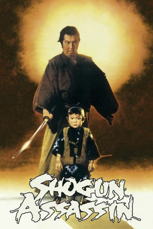

#3500 Shogun Assassin
 gesehen am 19.04.2016
gesehen am 19.04.2016
 
 IMDB-Wertung: 7.4 / 10
IMDB-Wertung: 7.4 / 10  Metascore: 0
Metascore: 0 
Das Japanische Kaiserreich durchlebt schlechte Zeiten und das Volk stellt sich gegen den Shôgun. Etliche Untertanen werden daraufhin gefoltert und hingerichtet. In dem Scharfrichter Ittô Ogami (Tomisaburô Wakayama) sieht das Oberhaupt mittlerweile eine große Gefahr, die mit allen Mitteln beseitigt werden muss. Aus diesem Grund hetzt er seine Späher gegen den Meister des Schwertes und lässt dessen Frau Asami hinterhältig ermorden. Als heruntergekommener Samurai begibt sich Ogami auf dem blutigen Pfad der Rache, wo zahlreiche Männer des Shôgun auf ihn und seinem Sohn Daigorô warten...
Jahr: 1980
Dauer: 84 Minuten
FSK: BPjM Restricted
Land: Japan Studio: New World PicturesTonspuren: DD1.0 - ,
Untertitel: Englisch,
Auflösung: 1080p (1920x792) Größe: 6993 MB
Genre: Action, Abenteuer
Regisseur: Robert Houston
Drehbuch: Stefan Ruzowitzky
Soundtrack:
Darsteller:
 Marshall Efron als Voice
Marshall Efron als Voice- Sandra Bernhard als Voice
- Sam Weisman als Voice
- Robert Houston als Voice
- David Weisman als Voice
 Tomisaburô Wakayama als Lone Wolf
Tomisaburô Wakayama als Lone Wolf- Kayo Matsuo als Supreme Ninja
- Minoru Ôki als Master of Death
- Shôgen Nitta als Master of Death
- Shin Kishida als Master of Death
- Akihiro Tomikawa als Daigoro
- Lamont Johnson als Voice
- Vic Davis als Voice
- Lennie Weinrib als Voice
- Lainie Cooke als Voice
- Mark Lindsay als Voice
- Gibran Evans als Daigoro
- Akiji Kobayashi als Lord Kurogawa
- Taketoshi Naitô als Lord Bizen
- Tokio Oki als The Shogun
Datei: X:\FSK18-Eastern\Shogun Assassin (1980, FSKBPjM Restricted, 1920x792).mkv seit 19.04.2016
Festplatte: FSK18
 Es gibt insgesamt 102 Filme in der Gruppe 'FSK18-Eastern'
Es gibt insgesamt 102 Filme in der Gruppe 'FSK18-Eastern'